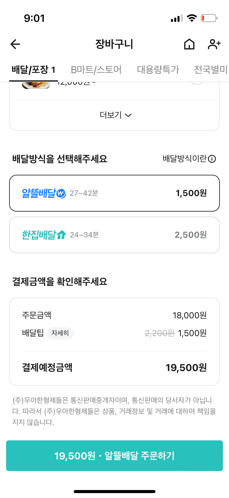

배달의 민족
한집배달과 알뜰배달의 비용·시간·쿠폰 조건은 어떻게 다른가?
음식을 주문하고 배달받는 플랫폼. 이 기록에서는 2023년의 한집배달·알뜰배달과 쿠폰 조건을 비교했다.
학습 목적2023년 분석 당시의 단건·묶음 배달을 고객·점주·라이더의 비용과 대기 시간 관점에서 비교했습니다. 배달 방식별 쿠폰 적용 조건이 주문 과정에서 충분히 안내되는지도 살폈습니다.
개인 학습 기록 · 관찰한 경험, 기획 의도에 대한 해석, 개선 제안을 구분해 정리했습니다. 수치·요금·정책은 분석 당시 조사한 자료이며 현재 기준이나 직접 만든 성과가 아닙니다.
2023년 서비스 구조를 다룬 학습 기록입니다. 당시 요금·수수료는 현재 정책으로 재게시하지 않았습니다.
01사용자와 해결 방향
누구를 위한 서비스인가배달비와 대기 시간을 함께 고려하는 고객, 운영 비용을 관리하는 점주와 라이더.
Why · 사용자가 찾는 이유
직접 외출하거나 매장에 전화하지 않고 원하는 음식을 주문하고 싶다. 배달비를 줄이고 싶을 때와 빨리 받고 싶을 때 각각 맞는 배달 방식을 선택하고 싶다.
What · 제공 경험과 해결 방식
메뉴 탐색부터 주문·결제·배달 상태 확인까지 연결한다. 한집배달과 묶음 방식의 알뜰배달을 통해 사용자가 비용과 대기 시간을 고려해 선택할 수 있게 한다.
분석 배경 · 2023년의 비용과 수요 압력
홈에서 배민1을 강조하는 이유를 우아한청년들의 배달대행과 비용 구조에서 살폈다. 원문은 2022년 감사보고서의 외주용역비 비중 전기 대비 10% 증가, 2023년 2월 거래 감소(전월 −9.5%·전년 동월 −11.5%), 배달비를 이용 감소 이유로 든 응답 93.9%를 참고했다. 거리두기 해제·외부 활동 증가·물가 상승을 수요 변화의 배경으로 정리했다.
02핵심 기능과 벤치마킹
- 배달 방식 선택
- 한집배달과 알뜰배달의 조건을 비교.
- 도착·배달 정보
- 기다림을 예상할 수 있는 안내.
- 쿠폰 조건
- 배달 방식과 적용 대상을 연결하는 혜택 정책.
비교해서 살펴본 지점
- 한집배달 / 알뜰배달
- 경쟁사 비교가 아니라 같은 서비스 내 비용·시간·적용 조건의 비교.
한집배달과 알뜰배달 · 당시 조건 비교
2023년 4월 원문에 기록한 요금이다. 현재 이용·수수료 안내가 아니다. 배달 방식과 소비자에게 보이는 배달팁을 결정하는 주체도 함께 비교했다.
| 항목 | 한집배달 | 알뜰배달 |
|---|---|---|
| 방식 | 한 번에 한 집을 방문하는 단건 배달 | 여러 주문을 최적 경로로 묶는 배달 |
| 배달비 | 6,000원 기준 사례, 점주·소비자 분담률을 점주가 결정 | 점주 2,500~3,300원, 소비자 약 2,000원 사례. 플랫폼 책정 |
| 요금 구성 | 신규·기본·배달비 절약·배달비 포함형 등 4종과 최대 6,000원 업주 부담 사례 | 중개 6.8%, 결제 1.5~3%·우대 적용, 지역별 배달비 차이 |
| 운영 가치 | 빠른 단건 전달 | 별도 대행사 계약 없이 주문·배달 연결, 소비자의 라이더 경로·예상 도착 확인 |
03사용자 흐름과 기획 의도
관찰한 경험
- 묶음 배달과 단건 배달의 비용·속도 차이, 선택 경로와 쿠폰 적용 조건을 비교했습니다.
- 쿠폰을 적용할 수 없는 주문에서 조건을 뒤늦게 확인하는 불편을 기록했습니다.
선택 진입과 쿠폰 조건의 불일치
홈 → 배민배달 → 배달방식 → 알뜰·한집 선택 흐름을 분석했다. 한집배달로 표시된 식당에서도 주문 경로에 따라 쿠폰이 비활성화되는 경험을 기록하고, 사용자가 배민배달 라벨을 매번 확인해야 하는 부담으로 정리했다.
왜 이렇게 설계했을까 · 나의 해석
- 소비자에게 중요한 것은 낮은 가격만이 아니라 기다리는 시간과 도착한 음식의 경험까지 포함한 가치라고 봤습니다.
- 플랫폼의 비용 절감이 모든 참여자의 이익으로 바로 이어지는지 따로 검토해야 한다고 정리했습니다.
04문제와 개선 제안
Pain Point · 걸리는 지점
- 쿠폰 적용 가능 범위를 주문 중에야 알게 되어 조건을 다시 확인해야 했다.
- 비용 차이가 작으면 느린 배달을 감수할 이유가 충분하지 않다고 느꼈다.
내가 바꿔본다면
- 적용 불가 쿠폰을 구분하거나, 사용할 수 있는 주문 경로로 안내.
- 가격 차이와 예상 도착 시간을 함께 보여줘 배달 방식 선택의 근거를 명확히 제공.

크게 보기 ↗05장점과 아쉬운 지점
좋았던 점
- 사용자가 비용과 속도를 비교해 선택할 수 있는 구조를 제시한다.
아쉬운 점 · 더 살필 점
- 고객의 할인 이점뿐 아니라 점주·라이더의 비용 구조도 함께 봐야 한다.
06내가 주목한 점
라이더의 보상까지 같은 비교에 넣기
당시 원문은 픽업 1,200원+전달 1,000원+100m당 80원의 구조를 조사했다. 기본 합계 2,200원을 배민1의 3,000원과 비교하며 묶음 처리의 효율이 라이더 수익 감소로 이어질 가능성을 질문했다. 점주 부담 차이는 작고 고객은 더 기다릴 수 있으므로, 몇백 원 차이나 오히려 비싼 사례까지 포함해 가격·시간·음식 품질의 실질적 가치를 따져야 한다고 봤다.
기획에 가져갈 기준
- 혜택 이름과 실제 이용 가치가 일치하는지 확인할 것.
- 사용할 수 없는 쿠폰의 노출 방식과 사용 가능한 경로로의 이동을 함께 설계할 것.